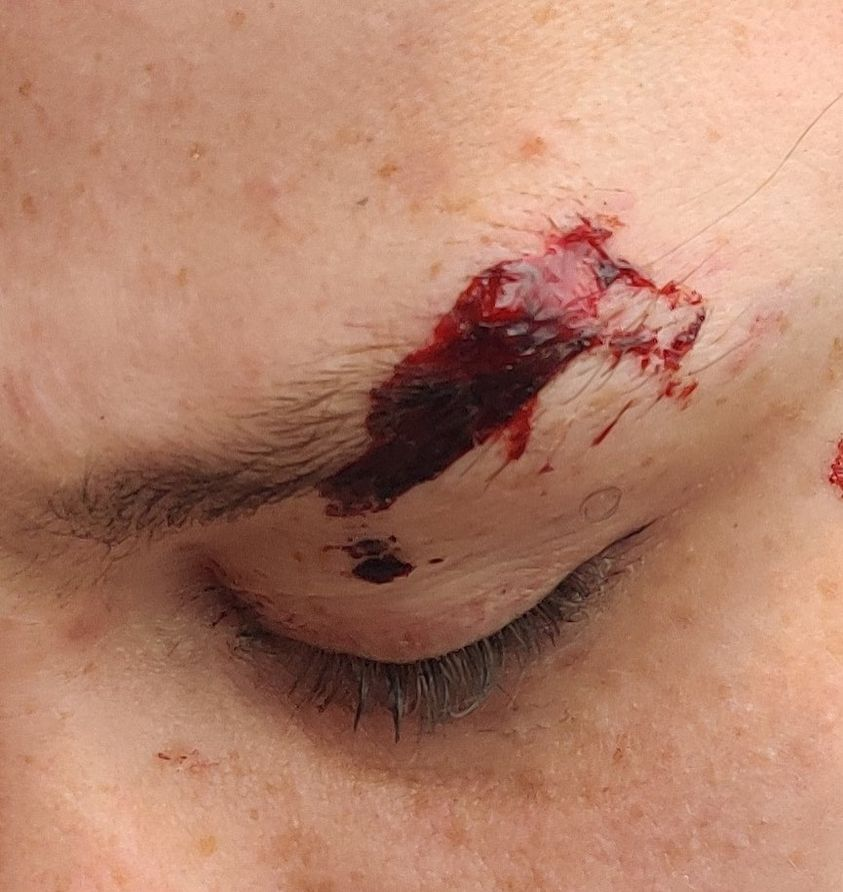

Timeline photos
The Rape, Torture and Beating of Women In Low Income American Communities
I recently came across this picture I took back in 2022. I honestly can’t even remember who it is.
Just some young, pretty, homeless woman who had been attacked.
I see so many of these stories they all blur together.
But the moral of the story is that woman are at extreme risk in low income neighborhoods. It’s a cultural thing. They haven’t caught up to where the rest of us are in society.
Japan has so much of a problem with men harassing women that they have women-only subway cars.
I’m going to be talking more about trends that I am noticing that cut across racial, economic and gender lines. But as I do, it’s critically important that you know that I don’t believe AT ALL that one group is innately different than another group. In a highly capitalist society like America, money drives a lot of this. But there are also lines that can be seen in particular groups within certain economic divisions.
I am really focused on telling my truth. You may or may not agree with me. And maybe I’ll change my truth along the way. But the point is to talk more, not less. Censorship driven by liberals is dangerous. It takes us back to a time when we pretended everything was fine.
The truth in this picture, as I see it, is this: Extreme abuse of women is not something that only white poor men do or just black poor men do. While most poor men don’t hurt women, those that do are equally represented in all races. The only cross section is that they are all men living in poverty.
And there is almost nothing to be done about it. If the woman reports it, that man’s friends will come after her. And then he’ll come after her after he gets out of jail. If the woman’s friends go after the man the same thing will happen. Any kind of justice will just make things worse.
And then there are the women who won’t leave their abuser. That’s a whole other issue.
As a person who shelters women who are repeatedly abused, I feel like there’s almost nothing you can do about it. Just love them and take them to the hospital when they need to go.
Place: Middlebury (41.071918, -81.488393)
Address: Middlebury, OH 44305